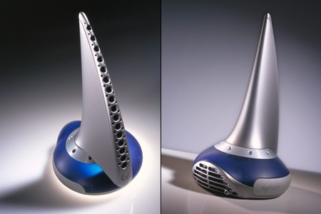

Digital scent technology (or olfactory technology) is the engineering discipline dealing with olfactory representation. It is a technology to sense, transmit and receive scent-enabled digital media (such as web pages, video games,
movies and
music). This sensing part of this technology works by using olfactometers and electronic noses.
Contents
1 History
1.1 1950s–1960s
1.2 1980s
1.3 1990s–2000s
1.4 2010s
1.5 2020s
2 Current challenges
History
1950s–1960s
In the late 1950s, Hans Laube invented the Smell-O-Vision, a system which released odor during the projection of a film so that the viewer could "smell" what was happening in the movie. The Smell-O-Vision faced competition with
AromaRama, a
similar system invented by Charles Weiss that emitted scents through the air-conditioning system of a theater.[1] Variety dubbed the competition "the battle of the smellies".[2]
Smell-O-Vision did not work as intended. According to a Variety review of the mystery comedy film Scent of Mystery (1960), which featured the one and only use of Smell-O-Vision, aromas were released with a distracting hissing noise
and audience
members in the balcony complained that the scents reached them several seconds after the action was shown on the screen. In other parts of the theater, the odors were too faint, causing audience members to sniff loudly in an attempt
to catch the
scent. These technical problems were mostly corrected after the first few showings, but the poor word of mouth, in conjunction with generally negative reviews of the film itself, led to the decline of Smell-O-Vision.[citation
needed]
1980s
Since 1982,[3] research has been conducted to develop technologies, commonly referred to as electronic noses, that could detect and recognize odors and flavors. Application areas include food, medicine and the environment.

iSmell concept render
1990s–2000s
In 1999, DigiScents developed a computer peripheral device called iSmell, which was designed to emit a smell when a user visited a web site or opened an email. The device contained a cartridge with 128 "primary odors", which could
be mixed to
replicate natural and man-made odors. DigiScents had indexed thousands of common odors, which could be coded, digitized, and embedded into web pages or email.[4] After $20 million in investment, DigiScents was shut down in 2001 when
it was unable
to obtain the additional funding it required.[5]
In 2000, AromaJet developed a scent-generating device prototype called Pinoke.[6] No new announcements have been made since December 2000.[citation needed]
In 2003, TriSenx (founded in 1999) launched a scent-generating device called Scent Dome, which by 2004 was tested by the UK internet service provider Telewest. This device was about the size of a teapot and could generate up to 60
different
smells
by releasing particles from one or more of 20 liquid-filled odor capsules. Computers fitted with a Scent Dome unit used software to recognize smell identifying codes embedded in an email or web page.[7]
In 2004, Tsuji Wellness and France Telecom developed a scent-generating device called Kaori Web, which comes with 6 different cartridges for different smells. The Japanese firm, K-Opticom, had placed special units of this device in
their internet
cafes and other venues until the end of the experiment on March 20, 2005.[8] Also in 2004, the Indian inventor Sandeep Gupta founded SAV Products, LLC and claimed to show a scent-generating device prototype at CES 2005.[9]
In 2005, researchers from the University of Huelva developed XML Smell, a protocol of XML that can transmit smells. The researchers also developed a scent-generating device and worked on miniaturising its size.[10] Also in 2005,
Thanko launched
P@D
Aroma Generator, a USB device that comes with 3 different cartridges for different smells.[11]
In 2005, Japanese researchers announced that they are working on a 3D television with touch and smell that would be commercially available on the market by the year 2020.[12]
2010s
During ThinkNext 2010, the Israeli company Scentcom featured a demo of its scent-generating device.[13]
In June 2011, a press release from the University of California, San Diego Jacobs School of Engineering[14] announced a paper published in Angewandte Chemie[15] describing an optimization and miniaturization of a component that
can select and
release scents from 10,000 odors, that is intended to be part of a Digital scent solution for TVs and phones.
In October 2012, Aromajoin, a Japanese company, released a small-sized product named Aroma Shooter which contains 6 different solid-type scents.[16]
In March 2013, a group of Japanese researchers unveiled a prototype invention they dubbed a "smelling screen". The device combines a digital display with four small fans that direct an emitted odor to a specific spot on the
screen. The fans
operate
at a very low speed, making it difficult for the user to perceive airflow; instead they perceive the smell as coming directly out of the screen and object displayed at that location.[17]
In July 2013, Raul Porcar (Spain), engineer and inventor developed and patented Olorama Technology, a wireless system with the aim to incorporate scents into movies, Virtual Reality, and all kind of audiovisual experiences.:[18]
In December 2013 Amos Porat inventor and CTO Of scent2you Israel Company has built several prototypes that can control scents.[19]
At GDC 2015, FeelReal unveiled its odor generator VR peripheral.[20]
In 2016 Surina Hariri, Nur Ain Mustafa, Kasun Karunanayaka and Adrian David Cheok from Imagineering Institute, Iskandar Puteri, Malaysia experimented with Electrical stimulation of olfactory receptors.[21]
At CEATEC 2016, Aromajoin unveiled the first wearable scent device, Aroma Shooter Mini, which can be connected and controlled from PCs and smartphones. Besides, the company also introduced a demo scent-enabled chatting app named
AromaMessage in
the event.[22] [23]
2020s
In 2020 OVR Technology introduced their Architecture of Scent® Platform. Which includes the ION™ Scent Device which attaches to an AR or VR Headset, a software suite including a plug-in for content developers to add scent triggers
and geometries
to Virtual Reality objects, and their in-house developed Scentware.™ The combination of this Hardware, Software, Scentware platform delivers precise scent molecules based on the user's interactions and can help deliver improved
immersion and
presence for virtual reality training and wellness applications. The Architecture of Scent platform helps tackle most of the "current challenges" listed in the next section[24]
Current challenges
Current obstacles of mainstream adoption include the timing and distribution of scents, a fundamental understanding of human olfactory perception, the health dangers of synthetic odours, and other hurdles.